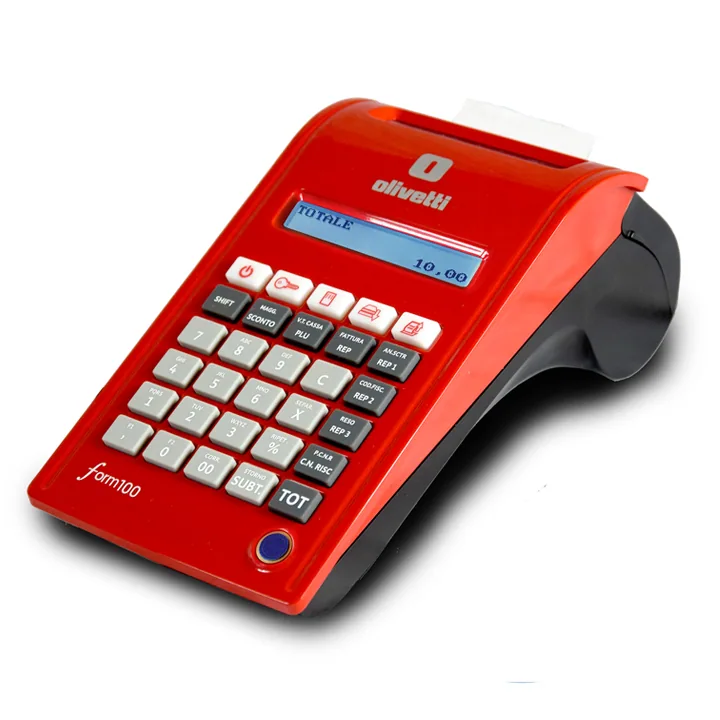
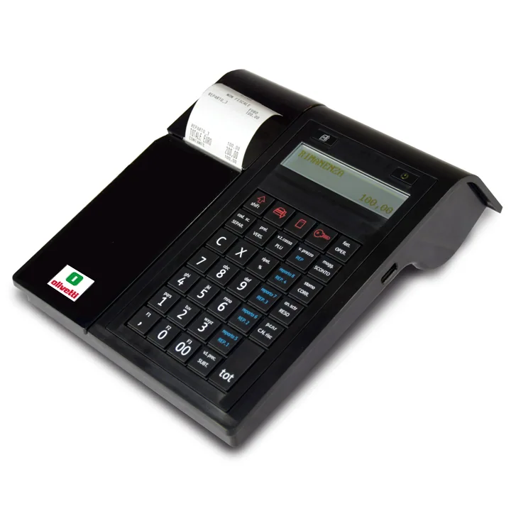
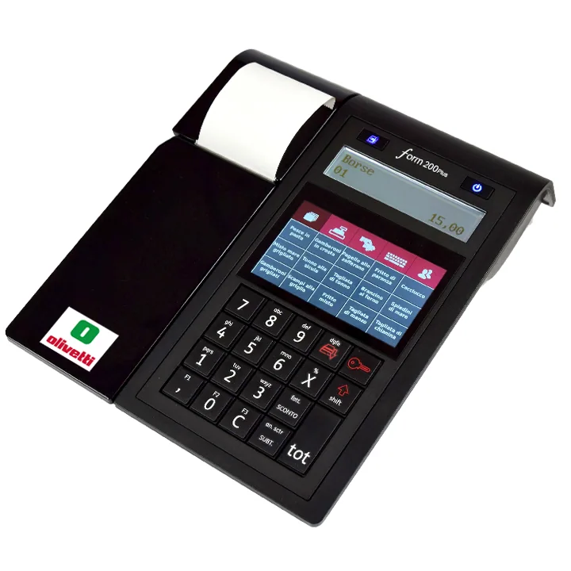
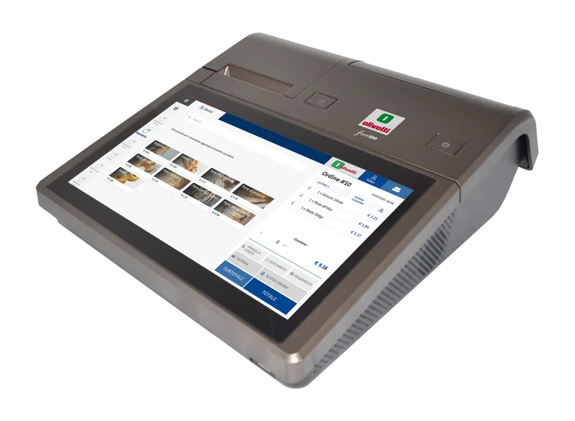
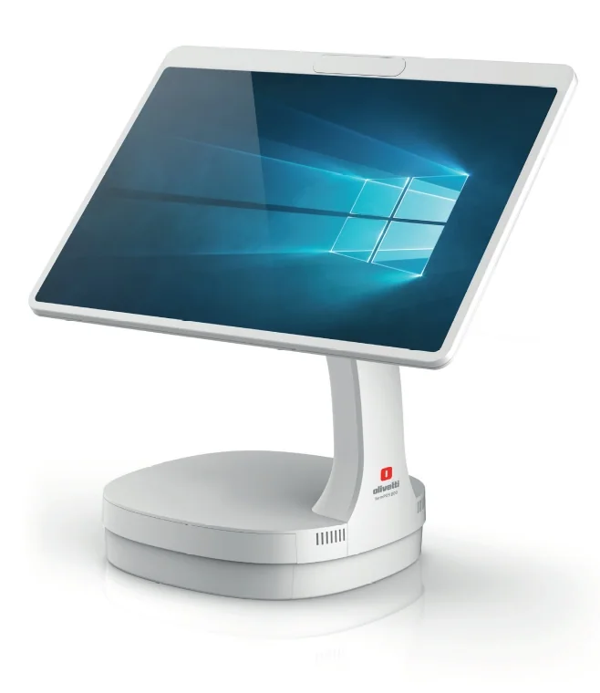
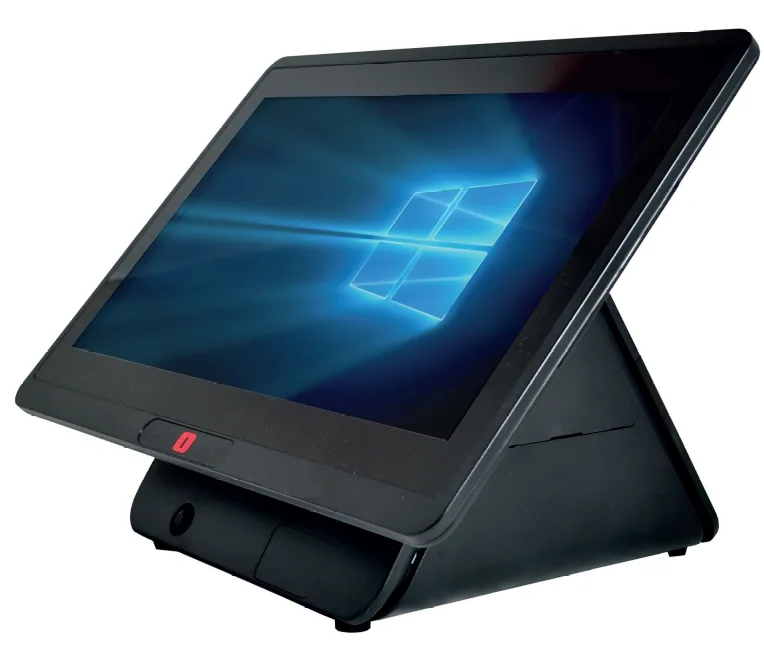

DUEMME · SOLUZIONI PER L'UFFICIO
Registratori telematici
Soluzioni per le esigenze delle attività commerciali.
Il servizio
Soluzioni per le tue esigenze
Registratori telematici e dispositivi per le attività commerciali, con consulenza sulle apparecchiature disponibili e supporto tecnico.
✓ Registratori telematici per punti vendita
✓ Informazioni su dispositivi e funzionalità
✓ Supporto per le esigenze del commercio
✓ Assistenza sulle apparecchiature
Richiedi informazioni
Contattaci per approfondire disponibilità, soluzioni e modalità di fornitura o assistenza.
Vai ai contatti →Catalogo Registratori telematici e sistemi POS
Una selezione di prodotti presente nell’archivio storico. Contattaci per verificare modelli attualmente disponibili, caratteristiche, compatibilità e condizioni di fornitura.





Immagini di archivio a scopo illustrativo. La presenza in catalogo non garantisce la disponibilità commerciale attuale.